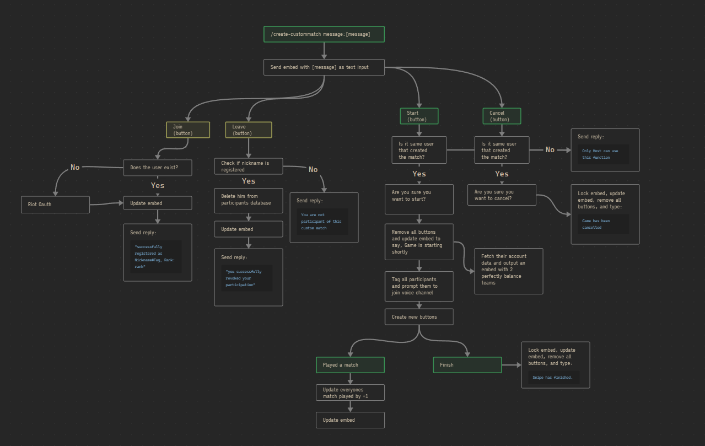

League Custom Matchmaking Bot

A private Discord bot built for our League of Legends community to automate custom matchmaking, account verification through Riot OAuth2, and player tracking inside Discord.
Key Features:
- 🔒 Riot OAuth2 account verification linked with Discord profiles
- ⚔️ Automated team balancing based on ranked divisions
- 🏆 Custom leaderboards inside the community
- 🎯 Challenge Points tracking for goals and milestones
- 📜 Player profiles showing match stats and ranks
Currently under active development for private use inside our gaming community!